Release notes 1.2/pl
Czy brakuje jakichś funkcji? Wspomnij o nich w wątku na forum Informacje o wydaniu v1.2.
Informacje na temat sposobów przyczyniania się do rozwoju programu FreeCAD można znaleźć na stronie Pomóż w rozwoju FreeCAD.
FreeCAD 1.2 zostanie wydany w roku ..., pobranie będzie możliwe ze strony Pobieranie programu. Ta strona jest podsumowaniem najciekawszych zmian i funkcji.
Starsze informacje na temat wydań FreeCAD można znaleźć na stronie Lista funkcji.
Ogólne
- Możliwe jest teraz jednoczesne edytowanie wielu dokumentów z niezależnymi zadaniami i stosami cofania, np. mając dwa szkice otwarte na raz (projekt GSoc). Pull request #21978
- Pliki kopii zapasowych .FCBak można teraz otwierać bezpośrednio za pomocą okna dialogowego Plik → Otwórz bez potrzeby zmiany ich nazwy na .FCStd. Zapisywanie takiego pliku uruchamia polecenie Zapisz jako…, aby zapobiec przypadkowemu nadpisaniu kopii zapasowej. Pull request #28454
Interfejs użytkownika
Pozostałe ulepszenia interfejsu użytkownika
- Wbudowany edytor tekstu wspiera teraz zaznaczanie linii poprzez kliknięcie na jej numerze (i opcjonalnie również przytrzymanie klawisza Shift, aby zaznaczyć zakres linii). Pull request #27677
- We wbudowanym edytorze tekstu, pole wyszukiwania jest teraz wstępnie wypełnione aktualnie zaznaczonym tekstem. Pull request #27674
- Od teraz dwukrotne kliknięcie na ścianie kostki nawigacyjnej dokona obrotu do niej, ale też wyśrodkuje widok. Pull request #28608
- Opcja menu kontekstowego Widoku drzewa Przelicz obiekt (polecenie Std_Recompute) ma teraz skrót klawiaturowy Ctrl+Shift+R. Pull request #27880
- Dostępny jest teraz przycisk Przełącz dolne panele i skrót Ctrl + O do przełączania dolnych paneli (Widoku raportu i Konsoli Pythona). Pull request #28598
- Polecenie Wyrównaj do zaznaczenia wspiera teraz zaznaczanie wielu obiektów. Pull request #29182
- Dwukrotne kliknięcie na polu wyrażenia czyści je teraz i zachowuje bieżącą wartość. Jeśli nie nastąpi żadna zmiana, wyrażenie zostanie przywrócone po kliknięciu poza polem. Pull request #29414
{kind=link}
{kind=link}
Rdzeń i API
Rdzeń programu
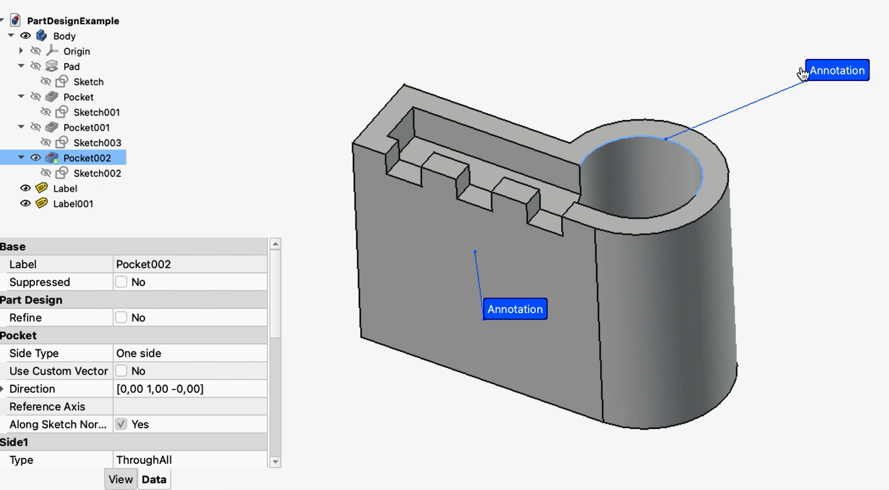 |
Dodano nowe polecenie wstawiające etykietę adnotacji do ostatniego wskazanego punktu w Widoku 3D. |
{kind=link}
{kind=link}
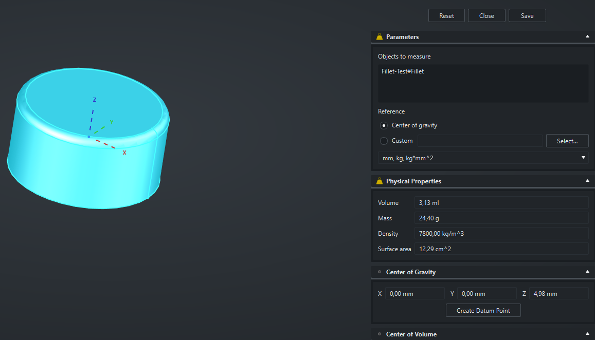 |
Dodano nowe polecenie Właściwości masowe do obliczania objętości, masy, pola powierzchni, środka ciężkości, środka objętości i momentów bezwładności dla części i złożeń, ze wsparciem dla własnych układów odniesienia i obliczeniami biorącymi pod uwagę przypisane materiały. |
{kind=link}
{kind=link}
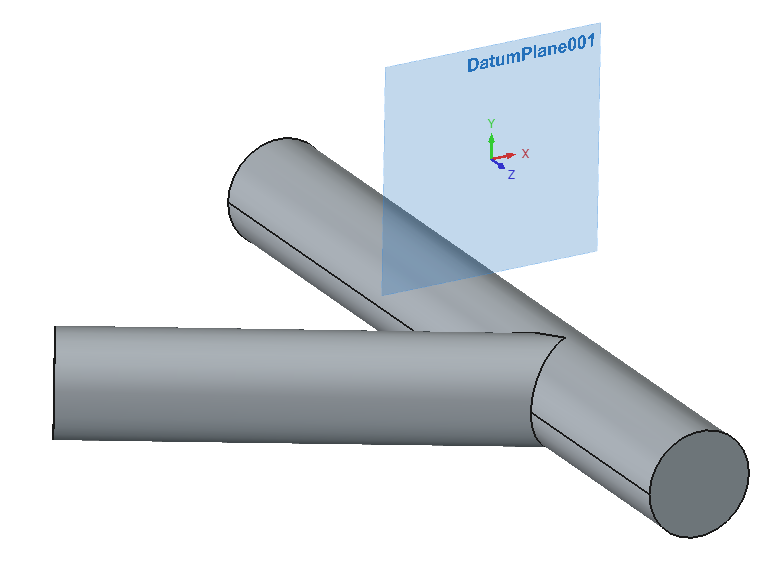 |
{kind=link}
Pozostałe ulepszenia rdzenia
- Pasek wyszukiwania w
 Ustawieniach może teraz uwzględniać podpowiedzi, opcje z list rozwijanych, pola wyboru i tytuły grup. Pull request #24283
Ustawieniach może teraz uwzględniać podpowiedzi, opcje z list rozwijanych, pola wyboru i tytuły grup. Pull request #24283 - Narzędzie Pomiary zyskało opcję wyświetlania pomiaru dla elementów okrągłych w formie średnicy zamiast promienia. Pull request #24853
- Narzędzie Pomiary wspiera teraz pomiar promienia i średnicy ścian cylindrycznych. Pull request #27044
- W systemie macOS pliki .FCStd wspierają teraz natywne rozszerzenie QuickLook, aby pokazywać podgląd pliku w wyszukiwarce. Pull request #25239
- Jednostki Pomiaru można teraz konwertować i odczytywać podczas dokonywania pomiarów. Pull request #27462
- Narzędzie Pomiary może teraz podawać promień i średnicę dla kołowych ścian poza dotychczasowymi typami pomiarów dla nich. Pull request #27415
- Narzędzie Pomiary wyświetla teraz jednostki pola powierzchni za pomocą indeksów górnych standardu unicode. Pull request #28044
- Makra wspierają teraz ścieżki, umożliwiając zbieranie plików związanych z nimi. Pull request #27005
- Narzędzie Pomiary może teraz podawać promień i średnicę dla sfer i torusów. Pull request #29369
- Narzędzie Pomiary wspiera teraz zakrzywione ściany w trybie Distance (pomiar odległości). Pull request #29367
- Wygląd i umiejscowienie strzałek trybu pomiaru Angle (kąt) zostały znacznie ulepszone. Pull request #27135
- Wybór elementów ramką zaznaczenia uwzględnia teraz
 filtry wyboru. Pull request #28982
filtry wyboru. Pull request #28982 - Narzędzie Pomiary wspiera teraz ściany kołowe w pomiarach kątów. Pull request #29803
- Narzędzie Pomiary wspiera teraz wewnętrzne ściany szkiców. Pull request #29551
{kind=link}
{kind=link}
API
Usunięte API Pythona
Zmienione API Pythona
Nowe API Pythona
Środowisko pracy Start
Menadżer dodatków
Środowisko pracy Złożenie
Pozostałe ulepszenia środowiska Złożenie
- Do panelu zadań Złożenia dodane zostały wiadomości solvera (informacje o nadmiarowych więzach). Pull request #24623
- Dodano nowe polecenie do wskazywania wszystkich połączeń powiązanych z wybranym komponentem.Pull request #27530
Środowisko pracy BIM
ToDo (last check: 20260430, #27222):
- https://github.com/FreeCAD/FreeCAD/pull/24078
- https://github.com/FreeCAD/FreeCAD/pull/24190
- https://github.com/FreeCAD/FreeCAD/pull/24550
- https://github.com/FreeCAD/FreeCAD/pull/24595
- https://github.com/FreeCAD/FreeCAD/pull/25086
- https://github.com/FreeCAD/FreeCAD/pull/25147
- https://github.com/FreeCAD/FreeCAD/pull/26758
- https://github.com/FreeCAD/FreeCAD/pull/27222
- https://github.com/FreeCAD/FreeCAD/pull/27375
- https://github.com/FreeCAD/FreeCAD/pull/27381
- https://github.com/FreeCAD/FreeCAD/pull/27420
- https://github.com/FreeCAD/FreeCAD/pull/27746
- https://github.com/FreeCAD/FreeCAD/pull/28036
- https://github.com/FreeCAD/FreeCAD/pull/28104
- https://github.com/FreeCAD/FreeCAD/pull/28504
Pozostałe ulepszenia środowiska BIM
Środowisko pracy CAM

Do Preferencji środowiska pracy CAM dodano Bibliotekę maszyn i Edytor maszyn. Wprowadzono również postprocessing oparty o maszyny. Definicje maszyn można także implementować jako dodatki. Pull request #26533, Pull request #27507 oraz Pull request #28405 |
Pozostałe ulepszenia środowiska CAM
- Okno dialogowe eksportu G-code pokazuje teraz numery linii. Pull request #23862
- Operacja MillFace została ponownie zaimplementowana z istotnymi ulepszeniami jako MillFacing. Pull request #24367
- Szybka kopia pozwala teraz na wybór wielu operacji. Pull request #24297
- Algorytm OCL Adaptive został dodany do operacji Linia poziomu. Pull request #23149
- Właściwość Sorting Mode została dodana do operacji Profil i Kieszeń, umożliwiając opcjonalne przetwarzanie kształtów zgodnie z kolejnością ich wyboru. Pull request #27410
- Obsługa obróbki resztkowej została dodana do operacji Algorytm adaptacyjny. Pull request #27908
- Ukryta właściwość Approximation została dodana do operacji Ulepszenie - znacznik. Może ona znacząco zmniejszyć liczbę poleceń, jeśli ścieżka zawiera ruchy łukowe niepoziome (np. ścieżkę śrubową). Pull request #28502
- Tapping został usunięty jako funkcja eksperymentalna i włączony do Wiercenia jako nowa strategia. Pull request #27506
- Operacja Circular Hole została znacząco ulepszona, w tym o nowy solver C++ 2-Opt TSP z wiązaniami Pythona do poprawy wydajności sortowania otworów, a także nowe tryby sortowania i ręczne zmienianie kolejności w GUI. Pull request #23093
- Nowy styl LineZFollow został dodany do operacji Ulepszenie wprowadzenia / wyprowadzenia. Może być używany jako zamiennik ArcZFollow, ponieważ jest prostszy i wymaga mniej obliczeń. Pull request #27986
- Możliwe jest teraz ręczne ustawienie RetractThreshold w operacjach Profil i Kieszeń. Pull request #21738
- Możliwy jest teraz ręczny wybór ścian lub krawędzi dla operacji Wiercenia lub Wiercenia śrubowego. Pull request #27494
- Operacja Helisa oraz generatory helisy i spirali zostały ulepszone, aby zapewnić lepsze wyniki i większą kontrolę. Pull request #21971
- Automatyczny wybór ścian nadających się do wiercenia został zoptymalizowany i może teraz znajdować ściany cylindryczne mające więcej niż 3 krawędzie. Pull request #27585
- Opcja Optimize Linear Paths została dodana do algorytmu OCL Adaptive w operacji Linia poziomu w celu usuwania zbędnych współliniowych punktów z wyjściowego G-code. Pull request #27040
- Nowy symulator CAM został zintegrowany jako widżet MDI w głównym oknie. Pull request #22204
- Narzędzie Kopia może teraz kopiować wszystkie operacje i robić to rekurencyjnie. Pull request #24819
- Narzędzie Przełącz aktywne stadium operacji obsługuje teraz grupy Zadanie i Operacje. Pull request #24872
- Możliwe jest teraz anulowanie eksportu G-code. Pull request #25273
- Tolerancję można teraz ustawić dla operacji Ulepszenie - znacznik, Grawer oraz Usuwanie zadziorów w celu zmiany dokładności segmentacji złożonych kształtów podczas tworzenia ścieżki. Pull request #26127 oraz Pull request #26128
- Operacja Algorytm adaptacyjny automatycznie dobiera teraz średnicę wejścia śrubowego. Pull request #23980
- Panele zadań CAM obsługują teraz wybór kształtów z różnych obiektów. Pull request #22304
- Frezowanie Wycięcie V zostało ulepszone dzięki użyciu "virtual edge backtracking". Pull request #25049
- Możliwy jest teraz postprocessing tylko wybranych operacji z Zadania oraz wybór operacji wewnątrz Ulepszenia. Pull request #22764
- Narzędzie Zakończ zaznaczoną pętlę zostało ulepszone i zwraca teraz polilinię, jeśli wybrano krawędzie, a inne metody zawiodły. Pull request #24185
- Funkcja chłodzenia została dodana do postprocesora Kinetic. Pull request #25022
- Właściwość Jednostki (Metryczne/Imperialne) została dodana do końcówek narzędzi. Pull request #25783
- Nowy symulator CAM używa teraz tego samego trybu widoku orto/perspektywa i stylu nawigacji co widok 3D. Pull request #23073
- Operacja Kieszeń może teraz obsługiwać poziome krawędzie oprócz ścian. Pull request #27750
- Właściwość Op Final Depth operacji Grawer ma teraz lepszą domyślną wartość zależną od półfabrykatu i kształtu grawerowania. Pull request #26543
- Właściwość Start Point można teraz ustawić z panelu zadań operacji Profil i Kieszeń. Pull request #29502
- Funkcja Circular Hole Base używana do wskazywania geometrii bazowej dla niektórych operacji pokazuje teraz pozycję i przelotowość (dla ścian cylindrycznych) oprócz nazwy ściany i promienia. Pull request #27869
- Operacja Helisa ma teraz właściwość Helix Max Ramp Angle, podczas gdy właściwość Helix Pitch jest teraz nazwana Helix Max Pitch. Pull request #29286
- Właściwość Zig Zag Angle operacji Kieszeń nazywa się teraz Angle. Jest ukryta jeśli wybrany wzór to Offset. Pull request #26842
- Dodane zostało nowe narzędzie umożliwiające tworzenie odbić lustrzanych wykończeń. Pull request #21820
- Dodany został szybki ruch z Clearance Height do Safe Height na początku kodu G operacji Rowek. Pull request #25845
- Usprawione zostało menu kontekstowe środowiska CAM. Pull request #26492
Środowisko pracy Rysunek Roboczy
ToDo (last check: 20260430, #29258):
- https://github.com/FreeCAD/FreeCAD/pull/26571
- https://github.com/FreeCAD/FreeCAD/pull/26950
- https://github.com/FreeCAD/FreeCAD/pull/27979
- https://github.com/FreeCAD/FreeCAD/pull/27987
- https://github.com/FreeCAD/FreeCAD/pull/28324
- https://github.com/FreeCAD/FreeCAD/pull/29142
- https://github.com/FreeCAD/FreeCAD/pull/29298
Pozostałe ulepszenia środowiska Rysunek Roboczy
Środowisko pracy MES
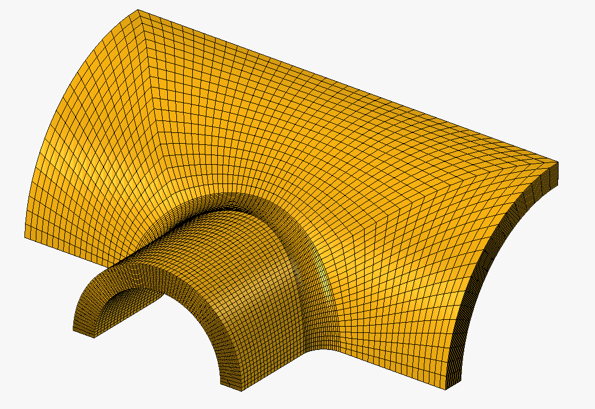 |
Dodano kilka nowych narzędzi rozszerzających możliwości meshera Gmsh o zaawansowane zagęszczenia oraz algorytmy transfinite. Dzięki tym drugim, możliwe jest teraz automatyczne tworzenie siatek typu hexa dla wszystkich kształtów, których podobjętości mają 5 lub 6 ścian z 3 lub 4 krawędziami każda. |
{kind=link}
{kind=link}
Pozostałe ulepszenia środowiska MES
- Obciążenie Gęstością ładunku elektrycznego zyskało pole wyboru Skupione w trybie Total Source, aby używać skupionego zamiast rozłożonego obciążenia (co pozwala na stosowanie go również do krawędzi i wierzchołków) z solverem CalculiX. Pull request #25237
- Obiekty wyników wspierają teraz animacje połowy cyklu oprócz odwróconych pełnych cykli. Pull request #24129
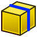
Funkcja zapisu wyników z przekroju wspiera teraz modele 2D i strumień elektryczny w analizach elektrostatycznych. Pull request #25081- Tryb Neumann Warunku brzegowego potencjału elektrostatycznego można teraz stosować do zadawania warunku brzegowego gęstości strumienia magnetycznego. Pull request #25897
- Właściwość Displace Mesh została dodana do przebudowanego solvera CalculiX, umożliwiając wizualizację w rzeczywistej skali deformacji siatki bez potrzeby używania filtra wizualizacji deformacji. Pull request #27786
- Dodana została funkcja Pythona addArrayFromFunction, umożliwiająca tworzenie własnych pól wyników w oparciu o pola
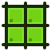
obiektów prezentacji graficznej wyników. Pull request #26076 - Wprowadzono polecenie w menu kontekstowym do czyszczenia grup siatki. Pull request #27945
- Dodana została preferencja szczegółowości logów solvera Elmer. Pull request #28058
- Właściwość None Field Color została dodana do obiektów prezentacji graficznej wyników i filtrów, aby ustawić kolor, gdy wyświetlane pole to None (może być przydatne np. przy korzystaniu z filtra symboli. Pull request #28028
- Komendy wszystkich solverów są teraz zawsze pokazywane (nawet jeśli dany solver nie jest zainstalowany) i są pogrupowane na pasku narzędzi oraz w menu. Domyślna ikona na pasku narzędzi zależy od domyślnego solvera wskazanego w Preferencjach. Pull request #28144
- Przypisania materiałów są teraz odczytywane z plików .frd z wynikami solvera CalculiX. Nie są one jeszcze dostępne we FreeCAD, ale można je wizualizować w ParaView po konwersji do formatu .vtm. Pull request #27847
- Obiekty Nieliniowego materiału mechanicznego są teraz grupowane pod obiektami materiału ciała stałego. Właściwości Geometrical Nonlinearity oraz Material Nonlinearity są teraz właściwościami logicznymi. Druga z nich jest włączona domyślnie i stosowana tylko, jeśli jakikolwiek materiał w analizie ma przypisany obiekt nieliniowego materiału mechanicznego. W innym wypadku jest ignorowana. Pull request #27862
- Algorytm Z-refinement meshera Netgen, pozwalający na tworzenie siatek przez wyciągnięcie, teraz wspiera również powłoki. Pull request #28204
- Możliwe jest teraz edytowanie plików wejściowych dla mesherów, aby dodawać własne polecenia do generowania siatki, podobnie do tego, co można już było robić dla solverów. Ponadto, niektóre ogólne preferencje środowiska pracy MES zostały ulepszone. Pull request #27942
- Warunek brzegowy potencjału elektrostatycznego jest teraz nazwany Warunkiem brzegowym elektromagnetycznym. Dokonano też kilku mniejszych zmian nazw. Pull request #27614
- Solver Z88 został przebudowany. Można go używać z obiema wersjami open-source Z88 - Z88OS oraz Z88Adria. Wspiera kilka typów elementów i podstawowe funkcje do analiz liniowych. Pull request #28944
- Właściwość Iterations Control Parameter Field została dodana do solvera CalculiX, aby umożliwić dostosowywanie kryteriów zbieżności. Pull request #29227
- Właściwość Beam Reduced Integration solvera CalculiX została zastąpiona uogólnioną właściwością Reduced Integration, która zamienia standardowe elementy bryłowe, powierzchniowe (powłoki, 2D) i belkowe ich odpowiednikami o zredukowanym całkowaniu. Pull request #29223
- Przebudowany solver CalculiX jest teraz używany domyślnie. Pull request #29220
- Funkcja zapisu wyników z przekroju może być teraz używana z solverem Z88. Pull request #29188
- Materiały mają teraz właściwość Material Name, ułatwiającą identyfikację właściwych materiałów reprezentowanych przez obiekty materiałów w kontenerze Analiza. Pull request #29609
- Dodane zostały trzy nowe
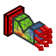
Przykłady MES dla solvera CalculiX: podstawowa sieć hydrauliczna 1D, wał osiowosymetryczny i płyta z otworem w płaskim stanie naprężeń. Pull request #29697 oraz Pull request #29711
{kind=link}
{kind=link}
{kind=link}
{kind=link}
{kind=link}
{kind=link}
{kind=link}
{kind=link}
{kind=link}
{kind=link}
{kind=link}
{kind=link}
{kind=link}
Środowisko pracy Inspekcja
Pozostałe ulepszenia środowiska Inspekcja
Środowisko pracy Materiał
Pozostałe ulepszenia środowiska Materiał
- Baza materiałowa metali została rozszerzona o dodatkowe typy miedzi i jej stopów. Pull request #25832
- Przypisanie materiału poprzez Std: Materiał teraz owija zmiany w transakcję, zastępując przycisk "Zamknij" przyciskami "OK" oraz "Anuluj", aby umożliwić wsparcie dla cofania operacji. Pull request #27910
Środowisko pracy Siatka
Pozostałe ulepszenia środowiska Siatka
Środowisko pracy OpenSCAD
Pozostałe ulepszenia środowiska OpenSCAD
Środowisko pracy Część
Pozostałe ulepszenia środowiska Część
- Dodano nową metodę do podziału krzywej złożonej na dwie krzywe dla wskazanego parametru. Pull request #26716
Środowisko pracy Projekt Części
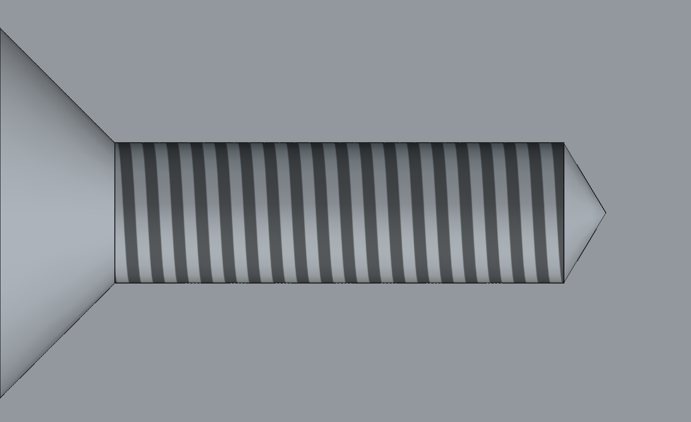 |
Wsparcie dla gwintów kosmetycznych (tekstur gwintów) zostało dodane do narzędzia |
{kind=link}

|
Tworzenie |
Pozostałe ulepszenia środowiska Projekt Części
- Interaktywne manipulatory obsługują teraz konfigurowalne przyciąganie zgrubne, co domyślnie pozwala na większe kroki, a przy użyciu klawisza modyfikującego (np. Shift) umożliwia precyzyjne przesuwanie; wielkość kroków przyciągania oraz klawisz modyfikujący można skonfigurować w ustawieniach. Pull request #28384
- Interaktywny manipulator został dodany do narzędzia Pochylenie ścian. Pull request #27111
- Interaktywne manipulatory zostały dodane do narzędzi prymitywów Sfera, Prostopadłościan oraz Walec. Pull request #23700
- Obsługa wielokrotnego wyboru została dodana do listy krawędzi ścieżki w narzędziach Uzupełnianie wyciągnięciem wzdłuż ścieżki i Odejmowanie wyciągnięciem wzdłuż ścieżki. Pull request #27962
- Odkrycie Zawartości bez widocznych cech powoduje teraz również odkrycie jej czubka. Pull request #24887
{kind=link}
Środowisko pracy Punkty
Pozostałe ulepszenia środowiska Punkty
Środowisko pracy Inżynieria Wsteczna
Pozostałe ulepszenia środowiska Inżynieria Wsteczna
Środowisko pracy Robot
Pozostałe ulepszenia środowiska Robot
Środowisko pracy Szkicownik
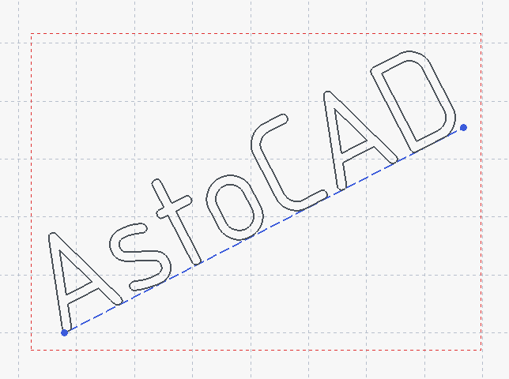 |
Dzięki AstoCAD, do Szkicownika dodane zostało narzędzie Tekst umożliwiające tworzenie geometrii tekstu sterowanych specjalnych wiązaniem typu Tekst. |
{kind=link}
{kind=link}
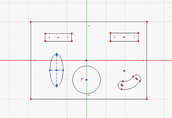 Kliknij na obrazku, jeśli animacja się nie uruchamia. |
Dzięki AstoCAD, do Szkicownika dodane zostało nowe |
{kind=link}
 Kliknij na obrazku, jeśli animacja się nie uruchamia. |
Generowanie ścian wewnętrznych szkiców teraz prawidłowo obsługuje skomplikowane nakładające się geometrie, takie jak 3 lub więcej przecinających się okręgów, gdzie poprzednio niektóre obszary ścian nie były w ogóle generowane. |
Pozostałe ulepszenia środowiska Szkicownik
- Możliwe jest już importowanie krzywych typu Bézier i Offset jako
 Geometrii zewnętrznej. Pull request #25144
Geometrii zewnętrznej. Pull request #25144 - Podczas tworzenia lub edycji wymiarów kołowych, możliwe jest przełączanie między promieniem a średnicą. Pull request #26794
- Lista wiązań zawiera teraz typ wiązania w jego nazwie. Pull request #26797
- Do
 Wiązania symetrii dodany został nowy tryb wskazywania. Możliwe jest teraz zaznaczenie elementu (linii, łuku lub otwartej krzywej złożonej) oraz linii symetrii. Pull request #25525
Wiązania symetrii dodany został nowy tryb wskazywania. Możliwe jest teraz zaznaczenie elementu (linii, łuku lub otwartej krzywej złożonej) oraz linii symetrii. Pull request #25525 - Wewnętrzne ściany szkiców są teraz widoczne z obu stron płaszczyzny szkicu, a podświetlanie wielokrotnego wyboru przy użyciu Ctrl+kliknięcie poprawnie podświetla wszystkie wybrane ściany. Pull request #28655 oraz Pull request #28651
- Dwukrotne kliknięcie wiązania geometrycznego uruchamia teraz zmianę jego nazwy. Pull request #27678
- Dwukrotne kliknięcie zaznaczenia działa teraz także z geometrią zewnętrzną. Pull request #28105
- Właściwości Grid i Make Internals są teraz domyślnie włączone dla nowych szkiców i dodano również preferencję przezroczystości siatki. Pull request #28771 oraz Pull request #28791
- Wybrane wiązania odległości (punkt-linia, okrąg-okrąg oraz okrąg-linia) wykorzystują teraz orientację, aby zapobiegać odwracaniu. Pull request #26518
- Opcja Utwórz wiązania symetrii narzędzia
 Symetria została ulepszona, aby unikać nadmiarowych więzów. Jest ona teraz również domyślnie włączona. Pull request #28118 oraz Pull request #28319
Symetria została ulepszona, aby unikać nadmiarowych więzów. Jest ona teraz również domyślnie włączona. Pull request #28118 oraz Pull request #28319 - Dostępny jest teraz przycisk Anuluj, który pozwala odrzucić modyfikacje w szkicu. Pull request #29337
- Wymiary
 Poziome,
Poziome, Pionowe i
Pionowe i  Odległości są teraz lepiej pozycjonowane domyślnie, aby unikać nakładania się ich z wymiarowanymi liniami. Pull request #29538
Odległości są teraz lepiej pozycjonowane domyślnie, aby unikać nakładania się ich z wymiarowanymi liniami. Pull request #29538 - Zaznaczanie obszarem w Szkicowniku bierze teraz pod uwagę filtry wyboru. Pull request #28982
- Wymiary długości łuku są teraz lepiej pozycjonowane dla łuków o większych rozpiętościach. Pull request #29594
Środowisko pracy Arkusz Kalkulacyjny
Pozostałe ulepszenia środowiska Arkusz Kalkulacyjny
- Menu wyboru kolorów zostało przeprojektowane i ma teraz dwa przyciski - do niestandardowych kolorów i do resetowania. Pull request #28698
Środowisko pracy Powierzchnia 3D
Pozostałe ulepszenia środowiska Powierzchnia 3D
Środowisko pracy Rysunek Techniczny
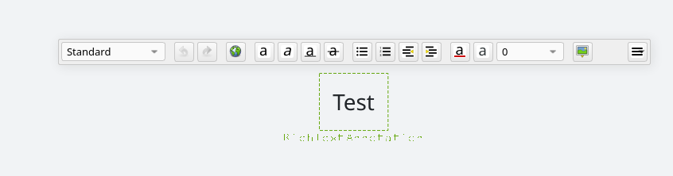 |
Narzędzia do adnotacji zostały przebudowane z ulepszonym edytowaniem adnotacji w postaci tekstu sformatowanego. Pull request #24624 |
{kind=link}
Pozostałe ulepszenia środowiska Rysunek Techniczny
- Gładkie krawędzie w środowisku Rysunek Techniczny są teraz renderowane za pomocą cienkich linii zgodnie z wymaganiami norm ISO. Pull request #27747
- Czcionkę linii przekroju, rozmiar czcionki i rozmiar strzałki w widokach przekroju można teraz ustawiać dla poszczególnych widoków za pomocą ich właściwości. Pull request #27521
- Wymiary kątowe w środowisku Rysunek Techniczny wspierają teraz wyświetlanie przyległego kąta (180° minus mierzony kąt) poprzez właściwość widoku. Pull request #27055
- Rysowanie sceny jest teraz znacznie szybsze. Pull request #25898 oraz Pull request #28702
- Panel zadań Wstaw aktywny widok (widok 3D) został przeprojektowany z ulepszonymi odstępami, polem wyboru stylu tła i pogrupowanymi ustawieniami przycinania, które wyłączają się automatycznie, jeśli nie są w użyciu. Pull request #28085
- Dostępna jest teraz opcja w menu kontekstowym do przełączania siatki dla aktywnej strony. Pull request #29083
- Panel zadań narzędzia Adnotacja w formie dymka został usprawniony. Pull request #28101